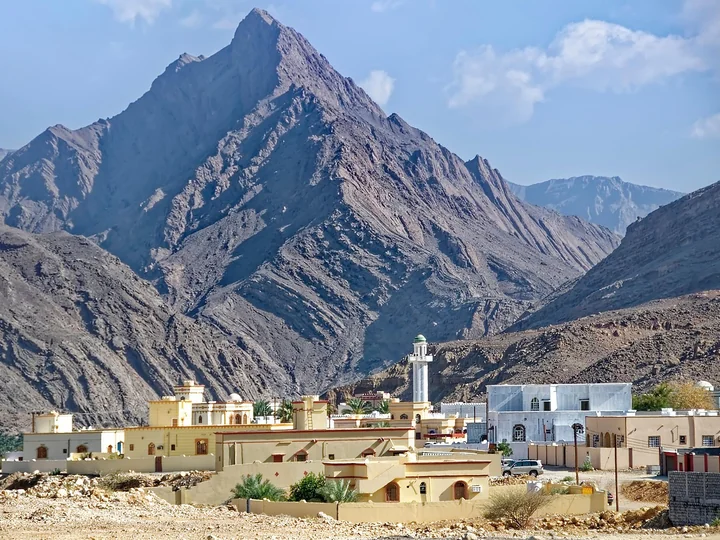

بيوت عند سفح الجبل
Makalu · نُشرت سنة ٢٠٢١
Oman, Wadi bani khalid, Location
تعديل المقاس واقتصاص البطاقات والنسخ الصغيرة، وتحويل الصور إلى WebP بمساحة ألوان sRGB.
سجلّ المواد المعروضة في المتحف، مع أسماء أصحابها ومصادرها وشروط استخدامها.
تُعرّف هذه الصور بالمشهد المعاصر لولاية وادي بني خالد. يحمل كلّ عمل ترخيصه الخاص المبين أدناه.

Makalu · نُشرت سنة ٢٠٢١
Oman, Wadi bani khalid, Location
تعديل المقاس واقتصاص البطاقات والنسخ الصغيرة، وتحويل الصور إلى WebP بمساحة ألوان sRGB.

dronepicr · التُقطت سنة ٢٠٢٣
Irrigation system in Wadi Bani Khalid, Oman (53698183850).jpg
تعديل المقاس واقتصاص البطاقات والنسخ الصغيرة، وتحويل الصور إلى WebP بمساحة ألوان sRGB.

Christoph Strässler · التُقطت سنة ٢٠١٩
Village in Wadi Bani Khalid, Oman.jpg
تعديل المقاسات وضغط بصيغتي WebP وJPEG، واقتصاص للبطاقات ومدخل المتحف وشاشات الهاتف وصورة المشاركة، مع تثبيت مساحة اللون sRGB. تخضع النسخ المعدّلة لرخصة المشاركة بالمثل ذاتها.

Christoph Strässler · التُقطت سنة ٢٠١٩
Falaj in Wadi Bani Khalid, Oman.jpg
تصغير وضغط بصيغة WebP، واقتصاص للبطاقات، مع تثبيت مساحة اللون sRGB. تخضع النسخ المعدّلة لرخصة المشاركة بالمثل ذاتها.

dronepicr · التُقطت سنة ٢٠٢٣
Aerila view of Wadi Bani Khalid, Oman (53697747871).jpg
تصغير وضغط بصيغة WebP، واقتصاص للبطاقات، مع تثبيت مساحة اللون sRGB.

Rafael Peier · نُشرت سنة ٢٠٢٦
A bright blue river flows through a narrow rocky canyon
تصغير وضغط بصيغة WebP، واقتصاص للبطاقات، مع تثبيت مساحة اللون sRGB.

Christoph Strässler · التُقطت سنة ٢٠١٩
Wadi Bani Khalid, Oman.jpg
تصغير وضغط بصيغة WebP، واقتصاص للبطاقات، مع تثبيت مساحة اللون sRGB. تخضع النسخ المعدّلة لرخصة المشاركة بالمثل ذاتها.
صورة إضافية من النسخة السابقة، محفوظة بعنوانها الدائم.
رُسمت خطوط الساحل بتبسيط بيانات اليابسة من Natural Earth، الإصدار ٥٫١٫١، بمقياس ١ إلى ١٠ ملايين. بيانات الساحل متاحة ضمن الملك العام.
بيانات اليابسة · شروط الاستخدام
أُسقطت علامتا وادي بني خالد وويتة على الخريطة من إحداثيات GeoNames، وفق رخصة المشاع الإبداعي لنَسب المصنّف ٤٫٠.
مقطوعة أصلية مدّتها ثمانون ثانية، أُنشئت نغماتها وإيقاعاتها برمجيًا خصيصًا للمتحف. يتيح بيان الحقوق لأصحاب المتحف استخدامها وتوزيعها مع موقعه.
الشعار رسمٌ خاص بالمتحف الأسري. تستخدم الواجهة الخط الأميري من خالد حسني ومشروع أميري، وخط Noto Sans Arabic من مشروع نوتو. وُفّرت الخطوط محليًا بصيغة WOFF2.
أتاحت الأسرة نصّ النسب والمقتطفات الشعرية المنشورة هنا. تبقى حقوق الطبعات المحقّقة والتسجيلات الحديثة لأصحابها.